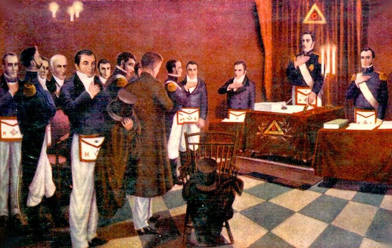

Historia
De los gremios de constructores a la Masonería moderna
Un recorrido por los antecedentes y los acontecimientos más relevantes de una tradición con más de tres siglos de existencia organizada.

Antecedentes
Los gremios de constructores
Las corporaciones de canteros y constructores medievales organizaron su oficio en talleres o “logias”, con reglas de trabajo, etapas de aprendizaje y obligaciones morales. Se conservan manuscritos de esos oficios, conocidos como las Antiguas Obligaciones; entre los más antiguos están el manuscrito Regius (hacia 1390) y el Cooke (hacia 1410).
Los primeros “aceptados”
Se conservan registros de hombres ajenos al oficio admitidos en logias de Escocia e Inglaterra. El anticuario Elias Ashmole anotó en su diario su admisión en una logia de Warrington en 1646.
La Masonería moderna
Una Gran Logia en Londres
Según la tradición, el 24 de junio de 1717 cuatro logias de Londres se reunieron y constituyeron una Gran Logia. Es el hecho que suele tomarse como inicio de la Masonería moderna organizada.
Las Constituciones de Anderson
James Anderson publicó las Constituciones, un conjunto de antecedentes históricos, reglas y deberes. Entre sus principios figura la tolerancia en materia religiosa.
“Antiguos” y “Modernos”
En Inglaterra convivieron dos Grandes Logias rivales. En 1813 se unieron y formaron la Gran Logia Unida de Inglaterra.
Expansión y Luces
En pocas décadas la Masonería se extendió por Europa y por las colonias americanas. Las logias funcionaron como espacios de encuentro y de intercambio de ideas de la Ilustración.
En el Río de la Plata
Organización de la Masonería argentina
Durante el siglo XIX, la Masonería en el Río de la Plata atravesó un proceso de expansión y organización institucional, en paralelo con la consolidación de los nuevos Estados y la transformación de la vida política e intelectual de la región.
El 11 de diciembre de 1857 constituye una fecha fundamental en la historia masónica argentina: en Buenos Aires se estableció la Gran Logia de la Argentina de Libres y Aceptados Masones, bajo la conducción de José Roque Pérez. Este acontecimiento permitió articular diversas logias que hasta entonces desarrollaban sus trabajos de manera dispersa, dando forma a una estructura institucional de alcance nacional.
La Masonería adquirió presencia en distintos ámbitos de la sociedad argentina, reuniendo a hombres vinculados con la política, el derecho, las ciencias, las letras y la vida pública. Sus talleres se convirtieron en espacios de sociabilidad, debate filosófico y transmisión de una tradición simbólica compartida.
El desarrollo de la institución no estuvo exento de diferencias internas, divisiones y reorganizaciones. La diversidad de ritos, criterios y estructuras de autoridad formó parte de un proceso histórico complejo, que contribuyó a definir el carácter de la Masonería argentina.
Así, el siglo XIX marcó el paso de experiencias masónicas dispersas a una organización institucional más consolidada, cuya historia quedó estrechamente vinculada con la evolución cultural y política del país.
Continuidad y presente
Durante el siglo XX, la Masonería argentina continuó desarrollando sus trabajos en un escenario marcado por profundas transformaciones políticas, sociales y culturales. Su trayectoria estuvo atravesada por períodos de crecimiento, reorganización y dificultades, así como por diferencias internas que dieron lugar a nuevas divisiones y posteriores acercamientos.
La continuidad de la tradición masónica no dependió únicamente de sus estructuras institucionales, sino también de la permanencia de sus logias, de la transmisión de sus enseñanzas y del compromiso de quienes mantuvieron vivo su lenguaje simbólico. A través de distintas generaciones, los talleres conservaron un espacio propio para el estudio, la reflexión y el trabajo iniciático.
En el siglo XXI, la Masonería continúa presente mediante sus logias y organizaciones, preservando una tradición que combina formas heredadas del pasado con los desafíos del mundo contemporáneo. La disponibilidad de información pública y los nuevos medios de comunicación han ampliado las posibilidades de dar a conocer su historia y sus principios, sin eliminar el carácter reservado de determinados aspectos de la vida iniciática.
La continuidad de una Orden no significa permanecer inmóvil ante el paso del tiempo. Supone conservar una tradición, estudiar sus símbolos y transmitir su legado con responsabilidad, distinguiendo aquello que pertenece a la historia documentada de las interpretaciones que cada época construye sobre ella.
Entre la memoria de quienes precedieron y el trabajo de quienes hoy integran sus talleres, la Masonería mantiene abierta una senda de estudio y búsqueda cuyo recorrido se renueva en cada generación.
La Respetable Logia Luján N.º 810
[Completar: historia de la logia: fundación, templo, hechos destacados]